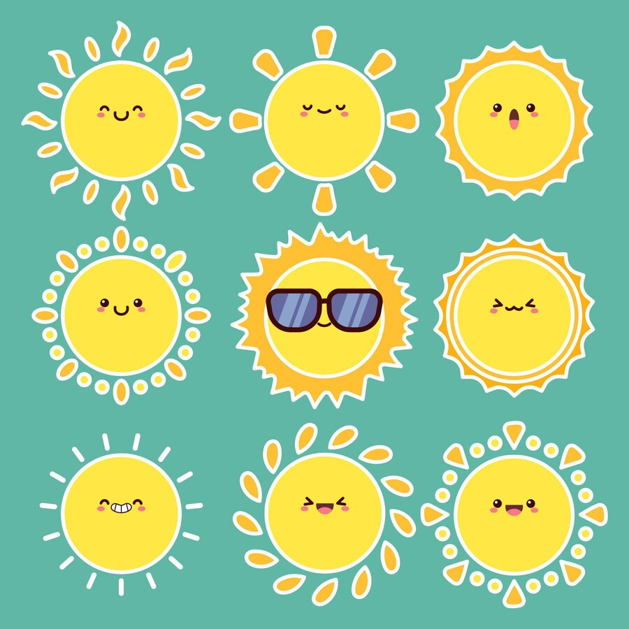

clic ici
clic ici
Hermine est agée de 34ans, d'origine Armènienne & vie à Lyon. Elle effectue les allers-retours entre Lyon et Saint-Etienne chaque jours et utilise le train en guise de transports en commun.
clic ici
Hermine est d'origine Armènienne et aime beaucoup le soleil;
Hermine fait du sport en salle, la plupart du temps seule mais parfois en groupe avec des amis. De nature très discrète Hermine aime travailler en individuel mais aussi en groupe quand il le faut.